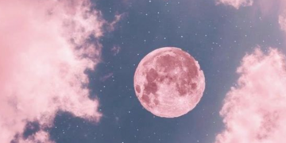

Luna Neptuniana - Blog
Te invito a leer la astrología desde mis ojos...
Luna Llena en Virgo

Mañana alrededor de las 4:15 am, se da la última lunación de este año astrológico que estamos despidiendo.
La luna llena ocurre a los 27° del signo de Virgo y cerramos el ciclo de 6 meses que se inició con la luna nueva en el mismo signo en Septiembre de 2021.
Leer MásSol en Tauro
Te olvidas que el sol siempre brilla
Que la luna acompaña las olas.
Te olvidas que el el calor ilumina
Que la danza alimenta la tierra
Que el movimiento susurra en la rocas.
Leer MásEclipse de Sol en Tauro

El sábado tuvimos Eclipse de Sol en Tauro junto a la Luna Nueva en Tauro, muchas de las cosas planteadas en los posteos anteriores son invitación a plantar e intencionar esta temporada.
El ecplipse potencia esta energía, el Sol y la Luna están en el mismo signo y nos traen todas estas temáticas para trabajar.
Leer MásReflexiones de Sol en Cáncer
Vengo de unos meses que me han invitado a ir hacia adentro, más aún este mes, haciéndole honor a mi sol, estaba con la energía puesta en mi y en mis procesos.
Julio vino *inserte meme (?* no solo con esta energía canceriana.
Plutón estuvo muy presente en el cielo...
Leer Más
Luna Llena en Libra
Como todos los meses, tuvimos un cierre de ciclo de la mano de una nueva LunaLlena, esta vez, a los 26° del signo de Libra.
Libra es la vincularidad, algo que les aproximé en el post anterior. El cierre de este ciclo nos trae, entre otras cuestiones, replanteos vinculares.Qué necesito reveer en mis formas de vincularme, conmigo y con otres?...
Leer Más